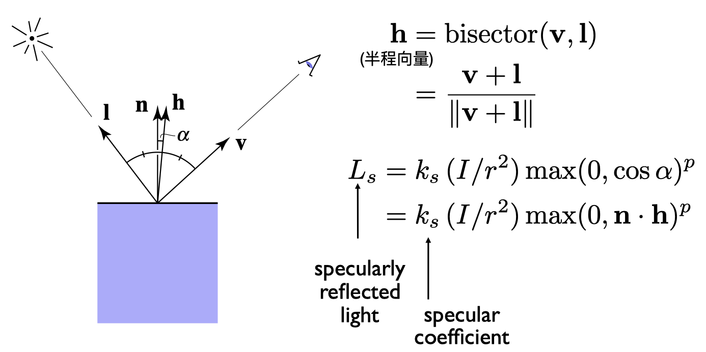

Lec 07~09 - Shading 光照、着色、着色频率、图形管线、纹理映射
着色（光照与基本着色模型）
着色和阴影无关
Shading：The process of applying a material to an object.
Blinn-Phong Reflectance Model 光照模型 着色模型
Diffuse
Lambertian (Diffuse) Shading
- 和view的方向无关
$$
L_{d}=k_{d}\left(I / r^{2}\right) \max (0, \mathbf{n} \cdot \mathbf{l})
$$- 几个变量：k_d, r, n, l
Specular
- V close to mirror direction → half vector near normal

- 几个变量：k_s, r, l, v, n, p
- p一般100～200，控制高光大小
Ambient
- 是假的
$$
L_{a}=k_{a} I_{a}
$$- 提升亮度
- 真的：全局光照（GI）十分复杂
合起来：
$$
\begin{aligned} L &=L_{a}+L_{d}+L_{s} \ &=k_{a} I_{a}+k_{d}\left(I / r^{2}\right) \max (0, \mathbf{n} \cdot \mathbf{l})+k_{s}\left(I / r^{2}\right) \max (0, \mathbf{n} \cdot \mathbf{h})^{p} \end{aligned}
$$
- h是半程向量
Shading is Local：对某个点进行计算，局部，只看自己，不管其他物体的存在
光的能量密度的 平方反比定律
- 点离光源的radiance
点离观察点的距离无关
Shading Frequencies 着色频率
flat shading: 每个三角形的法线是一样的，shading一次获得颜色值
- 效果不好

Gouraud Shading
- 每个顶点做一次Shading，中间对颜色值插值
Phong Shading
- 对法线值做插值，对每个点做Shading
- Not the Blinn-Phong Reflectance Model
几何足够复杂的情况下，用简单的Shading方法也可以达到好的效果
好的效果一般需要大的计算量
顶点法线方向的计算：相邻面的法线的平均
插值：Barycentric interpolation
法线向量记得Normalize
图形管线 Real-time Rendering Pipeline

- Vertex Processing
- Model, View, Projection transforms
- Shading, Texture mapping
- Output: Vertex Stream
- Triangle Processing
- Output: Triangle Stream
- Rasterization
- Sampling
- Output: Fragment Stream
- Fragment Processing
- Z-Buffer Visibility Tests
- Shading, Texture mapping
- Output: Shaded Fragments
- Framebuffer Operations
- Output: image (pixels)
Shader Programs
- Program vertex and fragment processing stages
- 自己编程顶点和像素的着色流程
- Describe operation on a single vertex (or fragment)
- 每个元素都执行一次
- vertex / fragment shader
- More:
- Geometry Shader
- Compute Shader
到现在的知识已经可以去学习API了（OpenGL, DirectX）
推荐：ShaderToy，只需要关注着色
Shader千变万化，例子：Snail Shader Program（超高端例子）
当下的实时渲染：
- 100’s of thousands to millions of triangles in a scene
- Complex vertex and fragment shader computations
- High resolution (2-4 megapixel + supersampling)
- 30-60 frames per second (even higher for VR)
Graphics Pipeline Implementation: GPUs
- Specialized processors for executing graphics pipeline computations
- Heterogeneous, Multi-Core Processor
- 可并行的
Texture Mapping 纹理映射
- 三维物体表面都是二维的
- 纹理：图，有弹性，可以映射到表面
- uv：[0,1]^2
- 三角形每个顶点对应一个uv坐标
- 一张纹理可以使用多次
- 纹理本身设计可以无缝衔接→tilable
- 一种方法：Wang Tiling
Barycentric coordinates 重心坐标→插值
三角形三个顶点的坐标和内部某点坐标的关系：
$$
\begin{array}{r} (x, y)=\alpha A+\beta B+\gamma C \ \alpha+\beta+\gamma=1 \end{array}
$$
可以利用这个关系做其它属性的插值
系数的计算：面积比
$$
\begin{aligned} \alpha &=\frac{-\left(x-x_{B}\right)\left(y_{C}-y_{B}\right)+\left(y-y_{B}\right)\left(x_{C}-x_{B}\right)}{-\left(x_{A}-x_{B}\right)\left(y_{C}-y_{B}\right)+\left(y_{A}-y_{B}\right)\left(x_{C}-x_{B}\right)} \ \beta &=\frac{-\left(x-x_{C}\right)\left(y_{A}-y_{C}\right)+\left(y-y_{C}\right)\left(x_{A}-x_{C}\right)}{-\left(x_{B}-x_{C}\right)\left(y_{A}-y_{C}\right)+\left(y_{B}-y_{C}\right)\left(x_{A}-x_{C}\right)} \ \gamma &=1-\alpha-\beta \end{aligned}
$$
barycentric coordinates are not invariant under projection!
投影前后的重心坐标可能会变化，所以需要在对应时间计算对应的重心坐标来做插值，不能随意复用！
Texture queries : Applying Textures
像素在三角形内→计算对应uv→取纹理对应颜色值→设置
问题1: Texture Magnification 纹理太小怎么办 → 插值
- 纹理像素：texel
- 多个pixel映射到了同一个texel
- 解决：
- Nearest
- Bilinear
- Bilinear 插值 lerp
- 水平+竖直插值→双线性插值
- 最近的四个点插值
- Bicubic 双向三次插值
- 周围16个点做三次插值
- 运算量更大，结果更好
问题2: Texture Magnification 纹理太大怎么办
- 一个pixel对应了多个texel → 采样频率不足导致 摩尔纹+锯齿（走样）
- 解决：
- Supersampling
- 太浪费！
- Just need to get the average value within a range
- Point Query vs. (Avg.) Range Query
- Mipmap：Allowing (fast, approx., square) range queries
- 每一次长宽各减半 D=0,1,2,…
- “Mip hierarchy”
- overhead: 1/3
- 怎么知道层数D？约为相邻pixel的映射uv之间的距离取2的对数
- 如果计算出来需要的D是整数，就很方便
- 如果计算出来需要的D不是整数→Trilinear Interpolation三线性插值
- 分别在floor(D)和ceil(D)上做Bilinear Interpolation取颜色值之后再插值
- Limitation：Overblur
- 不是方块查询
- Solution：各向异性过滤
- 各向异性过滤Anisotropic Filtering
- Ripmaps and summed area tables
- Can look up axis-aligned rectangular zones
- 长/宽/长和宽 各减半
- EWA filtering 椭圆取样
- 利用多次查询求平均值的方法来处理不规则区域
- overhead：3
- 多少x：压缩到多少x，显存足够的情况下开越高越好
- Ripmaps and summed area tables
- Supersampling
像素覆盖的区域大小各不相同
Application of Texture
各种贴图
texture = memory + range query (filtering)
- General method to bring data to fragment calculations
Many applications
- Environment lighting - Environment Map
- 环境光贴图
- 例子：Utah Teapot
- 经典：Stanford Bunny，Cornell Box
- Spherical Environment Map
- 球心：世界中心
- 一个问题：拉伸，想象地球仪展开
- 解决方法：Cube Map
- Cube Map：立方体表面，从球心到球面的投影向外
- 扭曲更少，但是Need dir->face computation，计算量更大
- Store microgeometry
Textures can affect shading! → define height/normal → Bump / Normal Map
- 两者类似，都可以以假乱真
- 改变表面的法线
Bump Mapping 凹凸贴图
Bump Mapping的Texture记录了高度移动
- 不改变几何信息
- 逐像素扰动法线方向
- 高度 offset 相对变化，从而改变法线方向
- 计算法线方向：切线的垂直方向
Displacement mapping 位移贴图
- 输入相同（Texture与Bump Mapping可共用）
- 改变几何信息，对顶点做位移
- 相比上更逼真，要求模型足够细致，运算量更高
- DirectX有Dynamic的插值法，对模型做插值，使得初始不用过于细致
- Procedural textures
- 3D Procedural Noise + Solid Modeling
- 定义空间中任意点的颜色
- 噪声+映射→
- Perlin Noise
- 3D Procedural Noise + Solid Modeling
- Provide Precomputed Shading
- Ambient occlusion texture map
- 计算好的环境光遮蔽贴图
- 空间换时间
- Ambient occlusion texture map
- Solid modeling & Volume rendering
- 三维渲染
Shadow mapping
光栅化下对全局光线传输、阴影的处理十分麻烦。
- draw shadows using rasterization
- An Image-space Algorithm
- 不需要场景的几何信息
- 有走样现象
- 思想：the points NOT in shadow must be seen both by the light and by the camera
步骤：
- Pass 1: Render from Light
- Depth image from light source → shadow map
- Pass 2A: Render from Eye
- Standard image (with depth) from eye
- Pass 2B: Project to light
- Project visible points in eye view back to light source
- visible to light source → color
- blocked → shadow
- Project visible points in eye view back to light source
感觉每个光源对每个静态场景有一个shadow map
应用：
- 几乎所有3D游戏
问题：
- 走样、分辨率
- 数值精度问题
- Involves equality comparison of floating point depth values means issues of scale, bias, tolerance
- 只能点光源、硬阴影